In this first portion we explore warping and blending of images in a very precise manner using a homograph transform that we calculate. We find that this enables us to create interesting panoramic images.
The corrspondences in these two images were manually selected based on sharp landmark features in the two views.
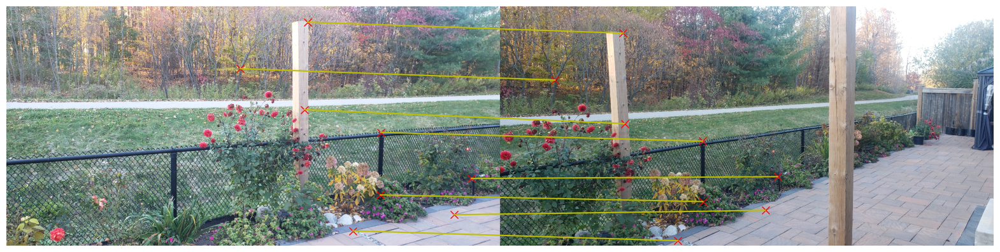
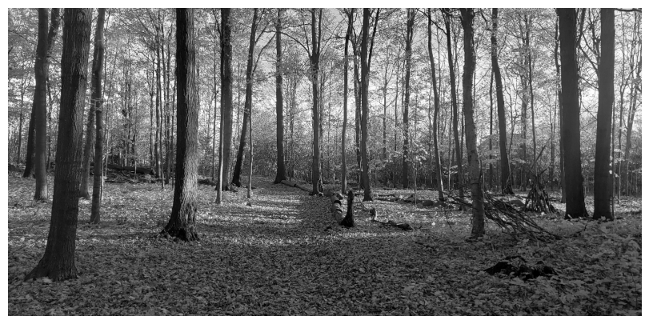
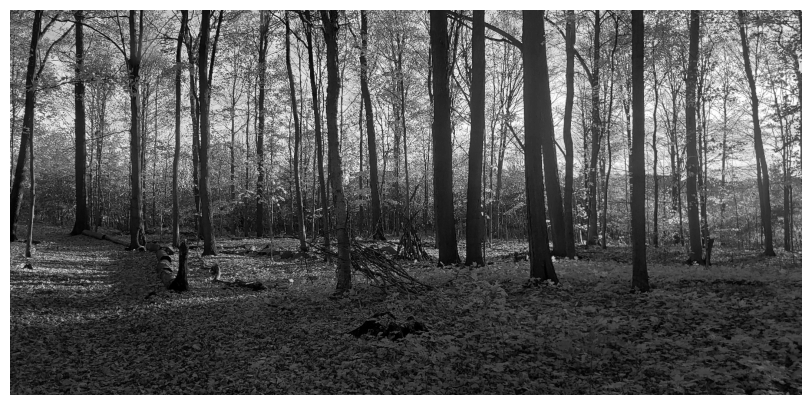
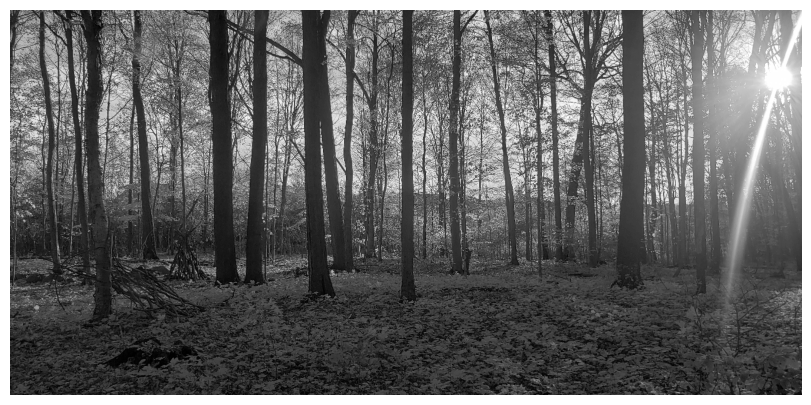
We construct a system of equations of the form Ah = b, it could also have been Ah = 0, where b value would have been included in the A matrix, and h would have been 9 elements instead of 8. The final system would have been identical in both cases.
The A Matrix is extracted as follows :
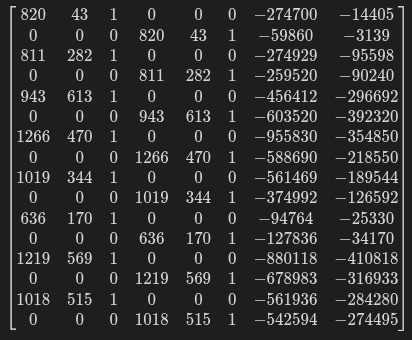
The b Matrix is :
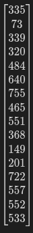
And we find that the recovered H matrix is :
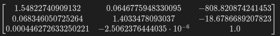
We use inverse warping as mentioned in the assignment to ensure that we don't leave any holes, which is what would have happened if we had iterated in each column and row of the unwarped image. We do simple checks to see when iterating through the target image's rows/cols that we are inside the source image.
We try to fix a historical architectural failure. If only in a warped image. We do need to be careful to ensure that not all the marked points lie on the same line, which would result in a degenerate homography matrix, so adding some on the other side of the tower ensure that we converged to a non-degenerate solution.
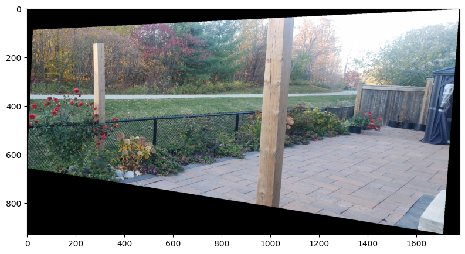
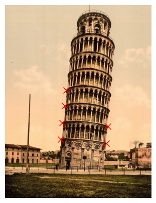
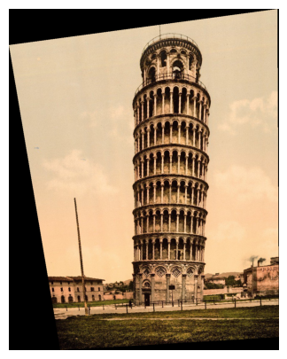
We use the blending code from our previous assignment to blend the images. Although in this case we use a scikit conv2d method to do everything faster.
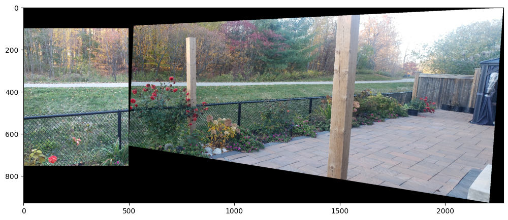
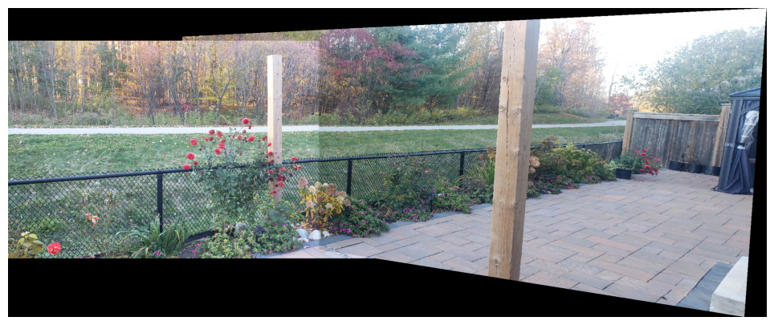
We use the the provided script to generate corner candidates and following the procedure as outlined in the "Multi-Image Matching using Multi-Scale Oriented Patches" paper, we implement a nonmax suppression algorithm.
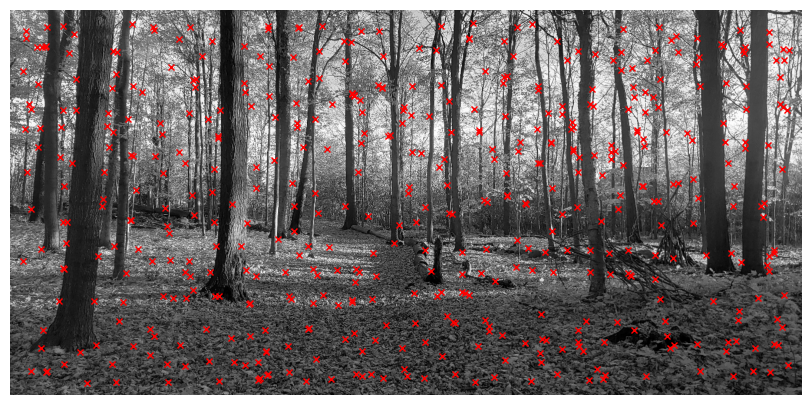
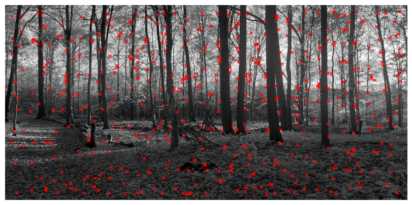
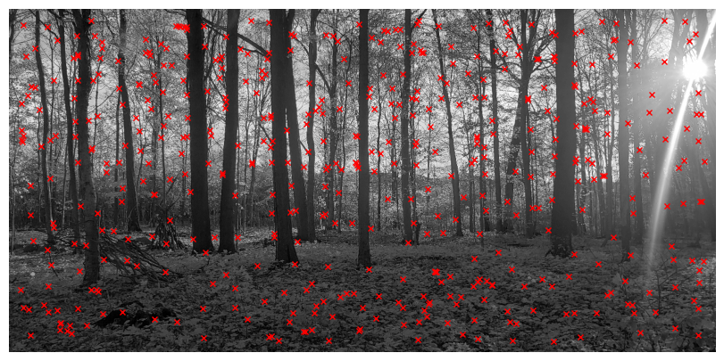
We extract 40x40 patches and use the gaussian kernel to smooth it similar to the previous assignments. Then we extract an 8x8 patch from it and remove the mean and adjsut its standard deviation to 1.
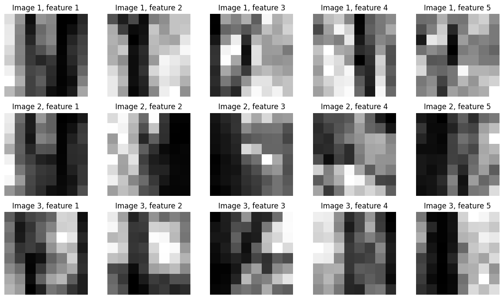
Thhe approach outlined in the paper to validate correct matches is using a nearest-neighbour ratio. From figure 6b we select 0.5 as a good balance between correct to incorrect matches.
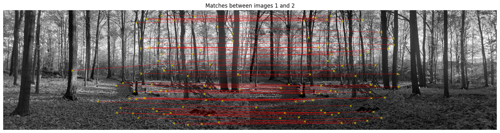
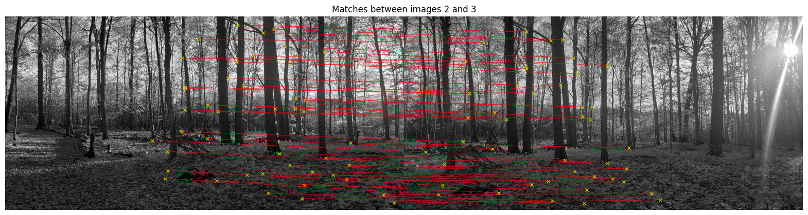
Next we employ the Random Sample Consensus algorithm to generate a list of best matches that remove potential outliers for a stable evaluation of the homography matrix. The results are as follows
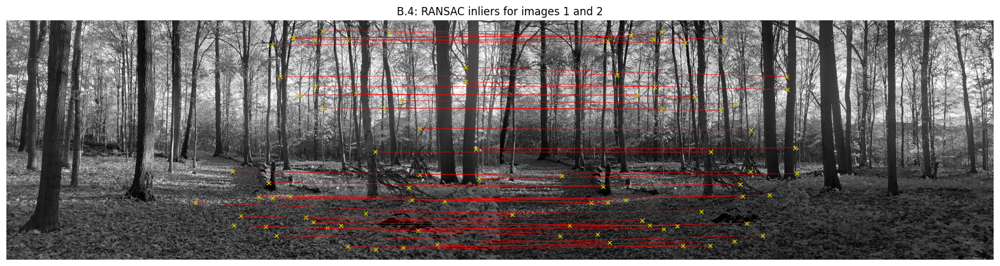
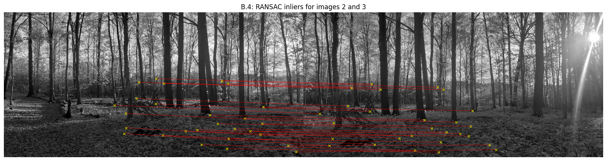
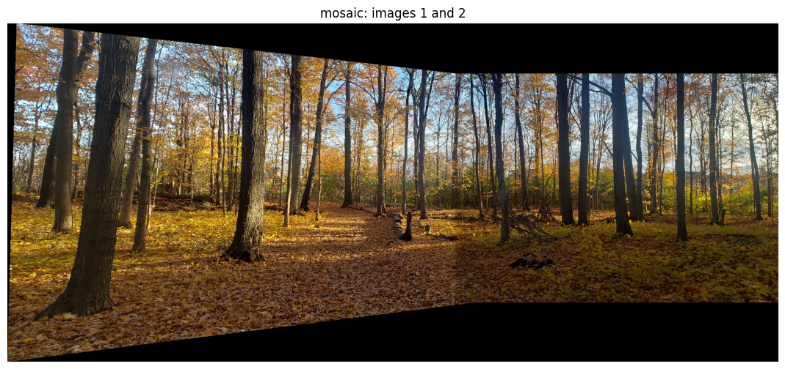
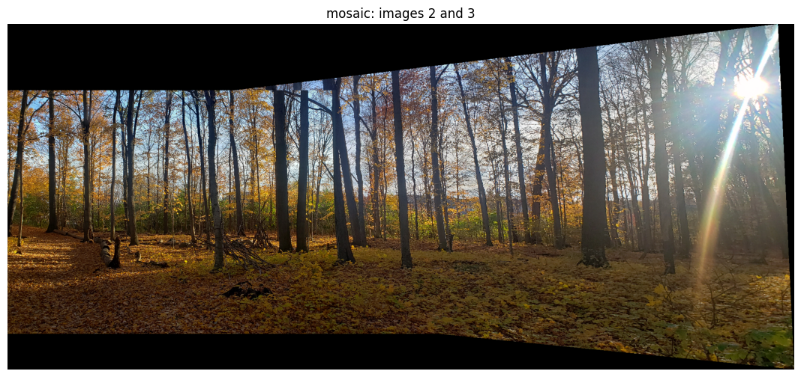
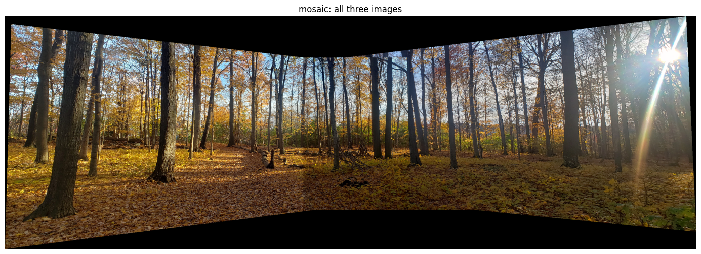